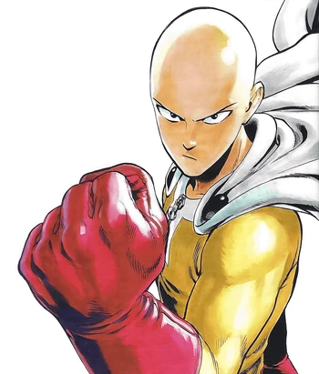

<!--Links de estilização-->
<link href="../../static/css/style.css" rel="stylesheet">
<script src="https://cdn.tailwindcss.com"></script>

<article class="grid h-full rounded-lg">
    <a href="nomepost.html" target="_blank" rel="noopener noreferrer">
        
        <figcaption class="flex flex-col gap-3 p-3">
            <h5 class="flex-grow text-xl font-bold">/* Saitama - protagonista de One Punch Man */</h5>
            <p class="flex-grow w-full h-56 overflow-y-scroll">
                /* Inicialmente apenas como um herói por diversão, Saitama decide se registra para ser um herói profissional para a Associação de Heróis ao perceber que ninguém o reconhece como um herói, enquanto defende sua casa na Cidade Z de monstros, vilões e outras ameaças. Na Associação de Heróis ele recebe o nome de herói Careca de Capa
                */
            </p>
            <p class="flex-grow"><small class="flex-grow text-gray-600">18 de Setembro de 2024</small></p>
            <div class="flex flex-grow w-full gap-3 px-4 py-2 border rounded shadow-sm full">
                
                <p class="my-auto"><strong>/* Makoto */</strong></p>
            </div>
        </figcaption>
    </a>
</article>